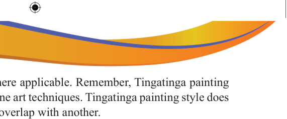

as flowers, and birds where applicable. Remember, Tingatinga painting techniques differ from fine art techniques. Tingatinga painting style does not allow one colour to overlap with another.
(h)
Bold black outlines: After the painting process is completed, use black acrylic paint with your fine-point brush to outline the animal and other objects present in the painting. Emphasis will be a crucial characteristic of Tingatinga art.
(i)
Final touches: Add important final touches to add intricate details and patterns. You can use a fine brush to create stylised features that make the animals stand out.
(j)
Drying: Leave the completed painting to dry before displaying it, and
(k)
Displaying: Display once the painting is dry, display it in an art exhibition style.

Activity 5.4
Follow the above Tingatinga painting style procedures and instructions to paint the following: (i) Single object (animal figure) style and any other decorative objects of your choice. (ii) Tingatinga painting composition comprising of animals and flowers. (iii) Samaki painting style in bright colours motifs. (iv) Mashetani painting style.
Exercise 5.4
1.
A Fine Art teacher rejected a student’s Tingatinga created painting in which the canvas had not been covered with emulsion. before the background.
Explain, why is it recommended to paint emulsion on the canvas before painting.
2.
One of the most important processes in Tingatinga painting is drying colours.
Why is it important to dry a picture after completing to paint every single colour?